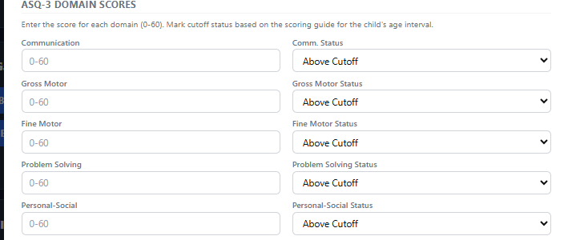
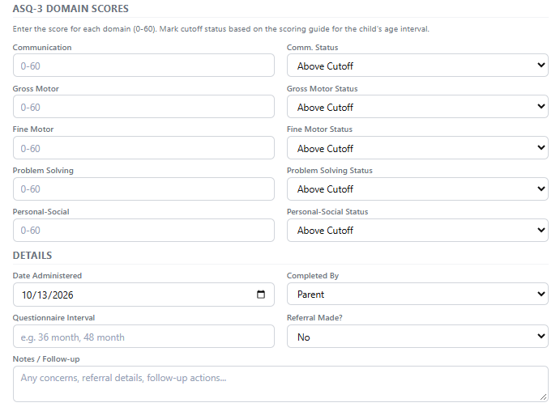
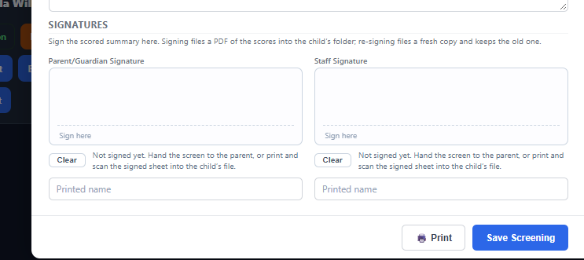

Scoring & signatures for Prevention Initiative (PI) children
Children of Promise Christian Dayschool · Millstadt, IL
What's changing: Parents still fill out the ASQ-3 / ASQ:SE-2 questionnaire.
Going forward, do not send the summary page home for the parent to score — the
teacher enters the summary scoring in our system. We also need signatures on
every PI child's forms on the Lenovo IdeaTab, even if the family already signed.
1
Parent completes the questionnaire Parent
The family fills out the age-appropriate ASQ-3 / ASQ:SE-2 questionnaire — the same as always.
2
Teacher uploads the parent's form Teacher

In the child's card, use Beg ASQ / Beg ASE, then Upload ASQ / ASE (PDF or clear photo). Required for a PI child.
3
Teacher scores the summary in the system Teacher

Enter each area score and status, the date, interval, and any notes/referral. The teacher scores the summary — not the parent.
4
Teacher collects the parent's signature on the IdeaTab Teacher

Hand the Lenovo IdeaTab to the parent to sign the scored summary, then add the staff signature. Do this for every PI child, even if they already signed the paper document.